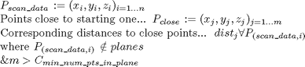
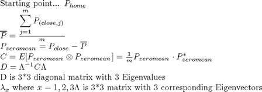
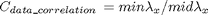
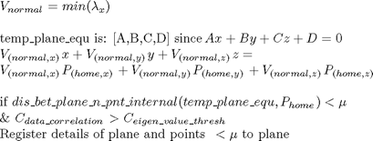
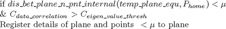
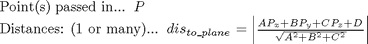

surface_making_simple
Description: This function is to go through each point and register it to one or more planes
Contents
- Function Call
- Variables
- Breakinto cubes
- Go through and register the points and make planes
- Do PCA on the points
- sort 3 eigenvalues so as to get data correlation
- finds which has least correlation =normal and the greatest is on the plane
- Check home point is close enough and datacorrelation is good enough
- If we want to display details of the algorithm
- FUNCTION: break_into_cubes_internal
- FUNCTION: distance_between_all_points_internal
- FUNCTION: dis_bet_plane_n_pnt_internal
Function Call
Inputs:
PointData (3*many double) x,y,z cartesian points
mew (double) size of the surfaces
DISPON (binary) whether to show the output or not
Returns: NULL
function surface_making_simple(PointData,mew,DISPON)
Variables
clear global plane global plane %default is to not show the display if nargin<3 DISPON=false; end %Scan data is the Point data 3*many cartisian points passed in scan_data=PointData; % The minimum num of points in a plane min_num_pts_in_plane=8; % The threashold of plane fit eigen_value_thresh=2; %other variables plane_num=1; point_cloud_reg=zeros([size(scan_data,1),1]); start_time=clock;
Breakinto cubes
cube_size=mew; [point_in_cube]=break_into_cubes_internal(scan_data,cube_size); voxelate_time=etime(clock,start_time);
Go through and register the points and make planes

for current_point=1:size(scan_data,1) %if not registered to a plane try and resister it or start its own if point_cloud_reg(current_point)==0 %get the distance from all points to current point distance_between=distance_between_all_points_internal(scan_data,current_point,mew,point_in_cube); if length(distance_between.closest_indices)>min_num_pts_in_plane
Do PCA on the points

%make the point group zero mean mean_to_sub=sum(scan_data(distance_between.closest_indices,:))/... length(distance_between.closest_indices); scan_data_minusmean=[scan_data(distance_between.closest_indices,1)-mean_to_sub(1),... scan_data(distance_between.closest_indices,2)-mean_to_sub(2),... scan_data(distance_between.closest_indices,3)-mean_to_sub(3)]; %get the convergance matrix of points and eigen values and vectors convergange_mat=cov(scan_data_minusmean); [eigenvectors,eigenvalues]=eig(convergange_mat); %make into a 3*1 matrix so we have each eigenvalue eigenvalues=eigenvalues*[1;1;1];
sort 3 eigenvalues so as to get data correlation

min2max_eig=sort(eigenvalues,'ascend'); if min2max_eig(1)>0 data_correlation=min2max_eig(2)/min2max_eig(1); else data_correlation=[Inf]; end
finds which has least correlation =normal and the greatest is on the plane

norm=eigenvectors(:,(eigenvalues==min2max_eig(1)));
temp_plane_equ=[norm(1),norm(2),norm(3),...
-(norm(1)*scan_data(current_point,1)+norm(2)*scan_data(current_point,2)+norm(3)*scan_data(current_point,3))];
Check home point is close enough and datacorrelation is good enough

if (dis_bet_plane_n_pnt_internal(temp_plane_equ,scan_data(current_point,:))<mew && data_correlation>eigen_value_thresh) dis_to_plane=dis_bet_plane_n_pnt_internal(temp_plane_equ,scan_data(distance_between.closest_indices,:)); plane(plane_num).home_point=scan_data(current_point,:); plane(plane_num).equ=temp_plane_equ; plane(plane_num).normal_by_eigenval=norm; plane(plane_num).points=distance_between.closest_indices((dis_to_plane<mew)); point_cloud_reg(plane(plane_num).points)=1; plane_num=plane_num+1; end end %end the if to see if there are at least 3 points within mew end %end the if unregistered current point end %end the for loop for every point
If we want to display details of the algorithm
if DISPON %% Printing out details - this is not needed % Print out the time taken and the points covered perc_of_pnts_reg=100*(1-size(find(point_cloud_reg==0),1)/size(point_cloud_reg,1)); calc_time=etime(clock,start_time); %determine memory use temp=whos('scan_data','bytes'); memB4=temp.bytes; temp1=plane(1).home_point;temp2=whos('temp1'); temp3=plane(1).equ;temp4=whos('temp3'); memafta=(temp2.bytes+temp4.bytes)*length(plane); %%%%%%%% % Display Algorithm Statistics disp(strcat('From a point cloud with:_',num2str(size(scan_data,1)),'_points')); disp(strcat('_Dividing into cubes took:_', num2str(voxelate_time),'_We used mew=_', num2str(mew),'_Min no. pts in plane=_',num2str(min_num_pts_in_plane),'_. The total time was:_',num2str(calc_time),'_sec.')); disp(strcat('We made:_',num2str(size(plane,2)),'_planes and registered:_',num2str(perc_of_pnts_reg),'_% of pnts')); disp(strcat('This reduced the data size from:_',num2str(memB4),'_to:_',num2str(memafta))); end
FUNCTION: break_into_cubes_internal
%breaks into cubes so that the searching is quicker. It returns a list an %index of the point that tells which cube it is inside function [point_in_cube]=break_into_cubes_internal(scan_data,cube_size) min_max=[min(scan_data(:,1)),max(scan_data(:,1));... min(scan_data(:,2)),max(scan_data(:,2));... min(scan_data(:,3)),max(scan_data(:,3))]; shifed_points=[scan_data(:,1)-min_max(1,1),... scan_data(:,2)-min_max(2,1),... scan_data(:,3)-min_max(3,1)]; %this fixes up the cubes so they start at 1 and go through to end in_which_cube=floor(shifed_points/cube_size)+1; max_values=max(in_which_cube); point_in_cube=zeros([size(scan_data)]); for i=1:max_values(1) point_in_cube((in_which_cube(:,1)==i),1)=i; end for j=1:max_values(2) point_in_cube((in_which_cube(:,2)==j),2)=j; end for k=1:max_values(3) point_in_cube((in_which_cube(:,3)==k),3)=k; end
FUNCTION: distance_between_all_points_internal
%this will give the distance between all points then return the points %within mew of the current_point function distance_between=distance_between_all_points_internal(scan_data,current_point,mew,point_in_cube) hc=point_in_cube(current_point,:); a= find(point_in_cube(:,1)==hc(1)-1 | point_in_cube(:,1)==hc(1) | point_in_cube(:,1)==hc(1)+1); b= a(find(point_in_cube(a,2)==hc(2)-1 | point_in_cube(a,2)==hc(2) | point_in_cube(a,2)==hc(2)+1)); close_pts_ind=b(find(point_in_cube(b,3)==hc(3)-1 | point_in_cube(b,3)==hc(3) | point_in_cube(b,3)==hc(3)+1)); distance_between.all_values=sqrt((scan_data(current_point,1)-scan_data(close_pts_ind,1)).^2+... (scan_data(current_point,2)-scan_data(close_pts_ind,2)).^2+... (scan_data(current_point,3)-scan_data(close_pts_ind,3)).^2); distance_between.indices=close_pts_ind; temp=find(distance_between.all_values<mew); [distance_between.closest_values,temp_order]=sort(distance_between.all_values(temp),'ascend'); distance_between.closest_indices=distance_between.indices(temp(temp_order));
FUNCTION: dis_bet_plane_n_pnt_internal

% Pass in the ABCD of a plane and a set of points and this function will return % the distance between them function dis_to_plane=dis_bet_plane_n_pnt_internal(plane_equ,pnt) %dis_to_plane=zeros([1,size(pnt,1)]); if size(pnt,1)>1 dis_to_plane=abs((plane_equ(1)*pnt(:,1)+... plane_equ(2)*pnt(:,2)+... plane_equ(3)*pnt(:,3)+plane_equ(4))./... sqrt(plane_equ(1)^2+plane_equ(2)^2+plane_equ(3)^2)); else dis_to_plane=abs((plane_equ(1)*pnt(1)+plane_equ(2)*pnt(2)+plane_equ(3)*pnt(3)+plane_equ(4))/... sqrt(plane_equ(1)^2+plane_equ(2)^2+plane_equ(3)^2)); end